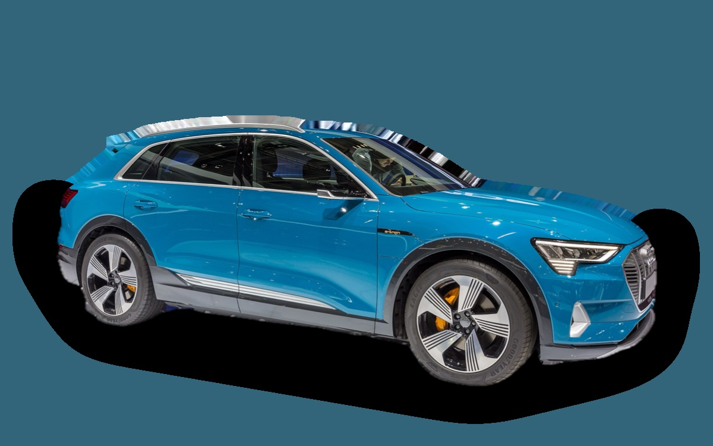
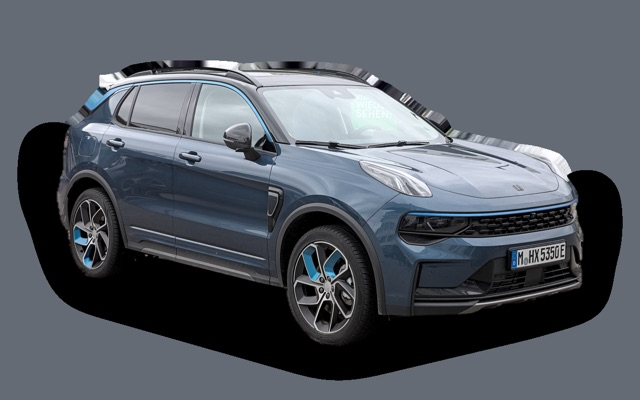

What does a Audi Q8 e-tron cost per month?
A 2022 Audi Q8 e-tron costs about SEK 4,789 a month, all in.

.jpg){kind=link}
Monthly cost by model year
| Model year | Version in the calculation | Price | Per month | Grade |
|---|---|---|---|---|
| 2025⚠︎ | 50 quattro 340, Proline | SEK 776,000 | SEK 8,432 | C |
| 2022 | 55 quattro 408, Proline | SEK 372,000 | SEK 4,789 | A |
| 2019 | 50 quattro 340, Proline | SEK 248,000 | SEK 3,835 | A |
Based on 5 years of ownership and 12,500 km a year, with fuel prices from 2026-10-22. The monthly cost includes depreciation, fuel, servicing and repairs, insurance and road tax.
⚠︎ Model years with a warning triangle have fewer than five ads to go on, so the price is uncertain.
How the cost splits for a 2022 car
- Depreciation: SEK 2,995/mo
- Fuel: SEK 585/mo
- Servicing and repairs: SEK 533/mo
- Insurance: SEK 646/mo
- Road tax: SEK 30/mo
Used prices in ads
| Model year | Median price | Ads | Typical mileage |
|---|---|---|---|
| 2025 | SEK 999,000 | 3 | 24,000 km |
| 2024 | SEK 509,700 | 40 | 65,000 km |
| 2023 | SEK 519,500 | 51 | 75,000 km |
| 2022 | SEK 369,800 | 14 | 92,000 km |
| 2021 | SEK 350,400 | 22 | 97,000 km |
| 2020 | SEK 304,500 | 8 | 125,000 km |
| 2019 | SEK 294,800 | 6 | 147,000 km |
The median price in Swedish ads by model year in October 2026 (source: Blocket, AutoUncle). Ad prices are asking prices, and the final price may be lower.
Engines and versions
| Engine | Fuel | Power | 0–100 km/h | Consumption (WLTP) | Range | Model years | Extra cost |
|---|---|---|---|---|---|---|---|
| 50 quattro 340 | Electric | 340 hp | 6 s | 22 kWh/100 km | 430 km | 2019–2025 | – |
| 55 quattro 408 | Electric | 408 hp | 5.6 s | 22.5 kWh/100 km | 500 km | 2019–2025 | +SEK 94,300 |
| SQ8 e-tron 503 | Electric | 503 hp | 4.5 s | 25 kWh/100 km | 450 km | 2023–2025 | +SEK 213,600 |
- Trim: Proline, S line (+SEK 39,300)
Facts
- Body
- SUV
- Model years
- 2019–2025
- Last new price
- SEK 799,900
- Boot
- 569 litres
- Euro NCAP
- 5 of 5 stars
- New-car warranty
- 3 years
- Reliability
- 3.5 of 5
- Comprehensive insurance, estimate
- SEK 11,600/yr
- Servicing, estimate
- SEK 3,200/yr
Common faults to watch for
- Air suspension, repair about SEK 12,000
The faults apply to some engines and model years. The calculator works out the risk for the exact version you choose.
Pros and cons
Pro
Very quiet and comfortable, and cheap used compared with its new price.
Con
Loses a lot of value, and energy use is fairly high.
Similar cars
 Skoda ElroqSEK 4,772/mo as a 2026 model
Skoda ElroqSEK 4,772/mo as a 2026 model Mercedes-Benz GLASEK 4,746/mo as a 2023 model
Mercedes-Benz GLASEK 4,746/mo as a 2023 model Mazda CX-60SEK 4,733/mo as a 2023 model
Mazda CX-60SEK 4,733/mo as a 2023 model Volvo XC60SEK 4,729/mo as a 2023 model
Volvo XC60SEK 4,729/mo as a 2023 model
Lynk & Co 01SEK 4,710/mo as a 2023 model Kia SorentoSEK 4,894/mo as a 2023 model
Kia SorentoSEK 4,894/mo as a 2023 model
Updated 2026-10-29 · ad data Oct 2026